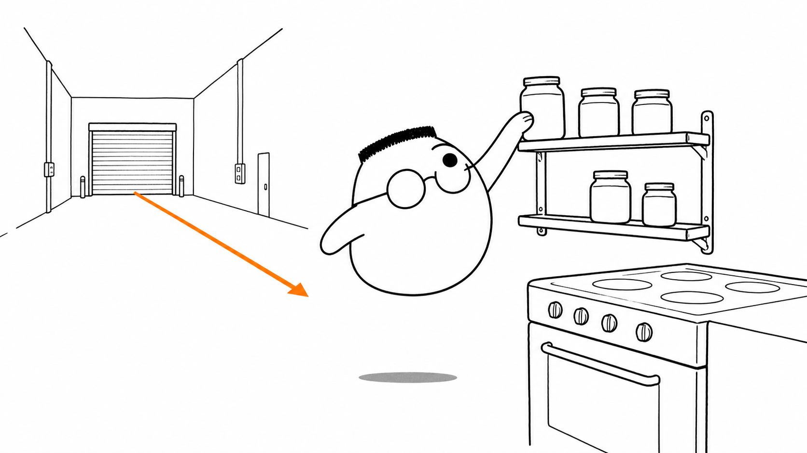
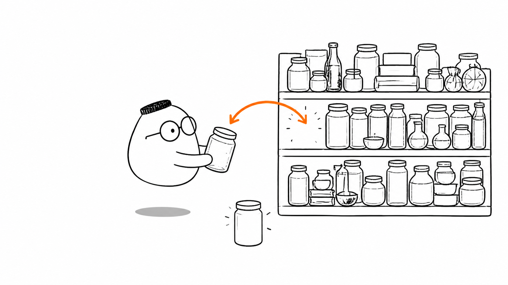
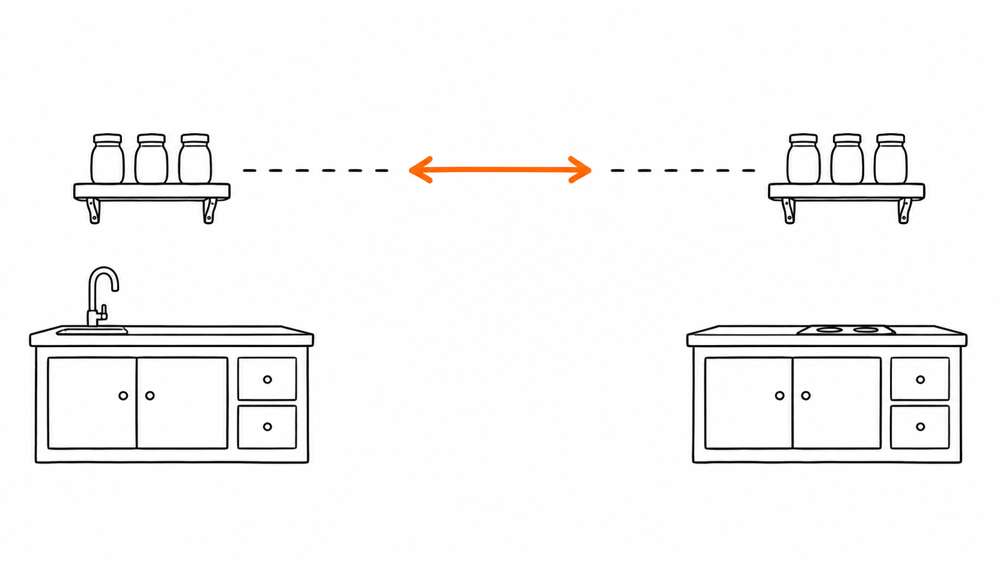

Masalah sehari-hari
Setiap pesanan meminta bahan yang berbeda. Jika semua bahan berada di gudang, Kuka harus berjalan jauh untuk mengambilnya. Satu perjalanan memang tidak masalah. Ratusan perjalanan membuat dapur lambat.
Salinan bahan favorit di rak dekat dapur membuat pengambilan lebih singkat. Salinan itu disebut cache. Gudang tetap menjadi tempat utama, sedangkan rak dekat membantu pekerjaan yang sering berulang.
Analogi Kuka
Kuka menata toples bumbu yang paling sering dipakai di rak kecil dekat kompor. Rak itu mudah dijangkau. Ia tetap tahu bahwa persediaan utama berada di gudang, seperti database pada bab sebelumnya.
Saat pesanan datang, Kuka mengecek rak dekat dapur. Toples yang ditemukan langsung diberikan kepada chef. Jika toples tidak ada, ia berjalan ke gudang, mengambil bahan, lalu menitipkan salinannya di rak untuk permintaan berikutnya.
Peta istilah rak dapur
Rak dekat dapur adalah cache. Gudang adalah database. Toples yang sering diambil adalah data yang layak disalin. Permintaan bahan adalah request. Mengambil dari rak lebih cepat daripada berjalan ke gudang.
Ilustrasi

Google menyimpan salinan halaman di banyak tempat agar hasil pencarian cepat. Netflix juga menaruh salinan video lebih dekat dengan penonton. Dapur mereka punya banyak rak, tetapi idenya sama: data yang sering diminta tidak selalu perlu diambil dari gudang utama.
Contoh dunia nyata
Google dan Netflix memakai banyak lapisan cache. Salinan diletakkan sedekat mungkin dengan orang yang meminta. Jarak yang lebih pendek biasanya berarti waktu tunggu yang lebih kecil.
Penjelasan konsep
Caching berarti menyimpan salinan data di tempat yang lebih cepat dijangkau. Aplikasi memeriksa cache sebelum meminta data dari database. Jika salinan masih ada, aplikasi segera mengembalikannya. Jika tidak ada, aplikasi mengambil data dari sumber utama dan dapat menyimpan salinan baru.
Ada beberapa tingkat caching. Data bisa berada di meja kerja program, di server aplikasi, atau di layanan yang dekat dengan database. Semakin dekat tempatnya dengan peminta, biasanya semakin cepat. Setiap tingkat juga punya ruang dan aturan waktunya sendiri.
Redis adalah layanan cepat untuk menyimpan data dalam bentuk key-value. Key seperti nama laci, sedangkan value adalah isi lacinya. Aplikasi meminta value dengan key yang tepat. Karena bekerja di memori, Redis cepat, tetapi data perlu aturan ketahanan jika ingin selamat dari listrik padam.
Rak juga tidak boleh penuh selamanya. Saat ruang habis, eviction memilih salinan yang harus dikeluarkan. Salah satu aturan membuang data yang paling lama tidak dipakai. Ruang kosong itu lalu tersedia untuk data yang lebih berguna.

Caching jaringan
Cabang restoran dapat memiliki raknya sendiri. Ia melayani permintaan lokal dari salinan yang dekat, lalu bertanya ke dapur pusat jika rak kosong. Jaringan pengiriman konten memakai gagasan serupa untuk menaruh salinan lebih dekat ke pengguna.

Strategi caching
Chef perlu menentukan kapan salinan dibuat dan kapan salinan dibaca langsung. Data yang sering berubah tidak cocok disimpan terlalu lama. Data yang jarang berubah dapat tinggal lebih lama. TTL membantu memberi batas waktu sebelum salinan dianggap kedaluwarsa.
Kasus Redis
Redis dapat menyimpan stok yang sering dilihat, session login, atau antrean ringan. Bentuk key-value membuat pengambilan sederhana. Isi tetap perlu dirancang agar cache tidak menjadi sumber data yang keliru.
Tingkat caching
Rak di meja kerja program paling dekat dan biasanya paling cepat. Rak di server aplikasi dapat dipakai bersama. Rak di jaringan melayani banyak lokasi. Setiap lapisan mengurangi perjalanan, tetapi menambah aturan untuk menjaga salinannya tetap masuk akal.
Diagram alur
Request memeriksa rak dekat lebih dulu. Jika ada, data langsung balik cepat. Jika kosong, request berjalan ke gudang, menitipkan salinan di rak, lalu mengembalikan data.
Contoh mini
Salinan tomat dititipkan di rak dekat dapur.
Permintaan kedua: tomat ada di rak, Kuka langsung mengambilnya.
Dua permintaan sama, perjalanan kedua lebih singkat.
Kartu pos kecil ini mengingatkan satu hal. Permintaan pertama mengisi rak. Permintaan kedua memanfaatkan salinan yang sudah dekat.
Ringkasan
- Cache adalah salinan data di tempat yang lebih cepat dijangkau.
- Aplikasi memeriksa cache sebelum meminta data dari database.
- Beberapa tingkat caching dapat berada di program, server, dan jaringan.
- Redis menyimpan data cepat dalam bentuk key-value di memori.
- Eviction mengeluarkan salinan saat rak penuh, sesuai kebijakan yang dipilih.
- Strategi caching menentukan kapan salinan dibuat dan berapa lama ia dipakai.
- Data yang sudah lama dapat menyesatkan jika salinan tidak diperbarui.
- Redis cocok untuk stok yang sering dibaca, session login, dan antrean ringan.
Pertanyaan pemahaman
- Apa untungnya menyimpan salinan bahan di rak dekat dapur?
- Apa yang dilakukan chef saat rak penuh dan ada bahan baru?
- Kapan salinan di rak bisa menjadi bahaya, dan apa nama masalah itu?
Mau lebih dalam
Versi teknis membahas cara memilih cache, mengatur masa hidup salinan, dan menangani data yang berubah.
Disinggung sekilas
- Caching tingkat perangkat keras
- Cache di jaringan pengiriman konten
- Perbedaan cache dan sumber data utama
Belum dibahas di sini
Contoh kode caching ada di versi teknis.
Bacaan lanjutan dan dokumentasi ada di catatan teknis Bab 9.